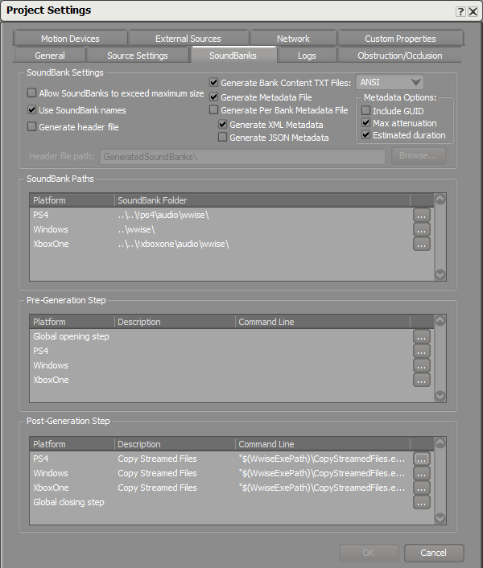
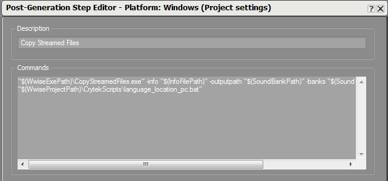
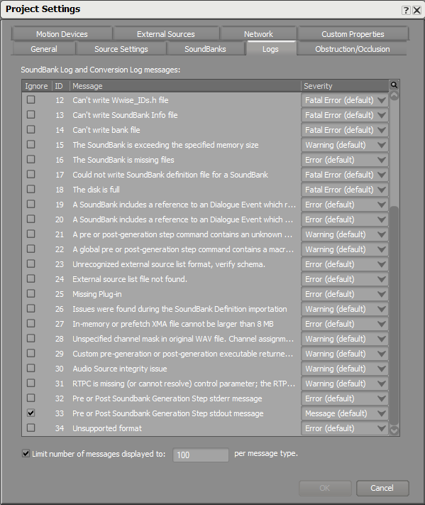

Обзор
Разделы
В этой статье объясняется, как настроить локализованные звуковые банки в Wwise и CRYENGINE. CRYENGINE загружает локализованные звуковые банки из папки локализации, например: localization/english/audio/wwise/. Это позволяет полностью отделить несколько языков (не только аудио) друг от друга, чтобы менять их местами во время выполнения, а также для более легкого распространения в разных странах.
Обязательно загрузите CRYENGINE GameSDK Wwise Проект из базы данных активов и скопируйте его в нужное место.
Информация о локализованных звуковых банках
Wwise встраивает свои локализованные звуковые банки в подпапку местоположения звукового банка, например: /audio/wwise/English(US)/.
Папку с локализованными банками звуков нельзя указать в Wwise, поэтому банки звуков необходимо переместить после генерации. Чтобы автоматизировать этот процесс, CRYENGINE SDK содержит сценарии постгенерации, которые перемещают звуковые банки в нужную папку. Эти скрипты можно найти в: /audio/wwise_project/CrytekScripts/
Скрипты работают только тогда, когда проект Wwise находится в том же месте, что и SDK: /audio/wwise_project/. В противном случае сценарии необходимо отредактировать в соответствии с местоположением проекта.
В настоящее время эти сценарии поддерживают только английский и немецкий языки, но вы также можете легко добавить другие языки. Вы можете открыть скрипты с помощью текстового редактора, например Блокнот++и скопируйте строки существующего языка и замените имя языка. В проекте SDK Wwise эти скрипты выполняются автоматически после создания звукового банка.
Настройка локализованных звуковых банков в Wwise
Выполнение сценариев после создания в новом проекте Wwise
Вы должны скопировать сценарии постгенерации CRYENGINE SDK в новый проект Wwise: /audio/wwise_project/CrytekScripts/, и откройте настройки проекта Wwise.
В SoundBanks вкладка, отредактируйте Шаг после генерации раздел.

В Шаг после генерации раздел добавьте эту строку для платформы Windows: "$(WwiseProjectPath)\CrytekScripts\language_location_pc.bat".

Аналогично вы можете выполнить описанный выше шаг для всех платформ в проекте.
Строки кода для Windows, Playstation 4 и Xbox One можно найти здесь, в CRYENGINE SDK: /gamesdk/audio/wwise_project/CrytekScripts/post_generation_steps.txt.
Другие платформы можно легко добавить, скопировав скрипт и отредактировав его содержимое.
Как избежать ненужных сообщений журнала после создания звуковых банков
Под Настройки проекта, выберите Журналы вкладку и проверьте игнорировать флажок для Стандартное сообщение до или после этапа генерации Soundbank (ID 33).
